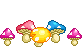
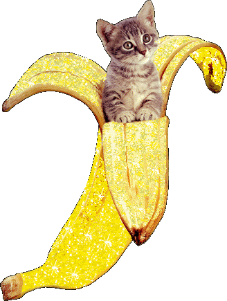

home ˜ shows ˜ teaching ˜ books ˜ texts ˜ projects ˜ contact ˜ newsletter ˜ BLOG
Born 1978 in Brescia, Italy.
Independent art critic and curator.
Professor and Director of the School of Art and New Technologies, Accademia di Belle Arti di Brera, Milan.
Co-founder, Link Art Center (🍼 2011 - 🪦 2019)

Selected shows
Folding, Flexing and Expanding. Curated with Jessica Bianchera. Palazzo del Capitanio, Verona (I), October 11 - November 9, 2025. More info - Installation views
Bloodchild. Scenes from a Symbiosis. Fondazione Spazio Vitale, Verona (I), October 5 - November 16, 2024. More info - Installation views
Per Speculum. Intelligence and its Double. Fondazione Spazio Vitale, Verona (I), May 26 - June 29, 2024. More info - Installation views
A View from Above. Curated with Salvatore Vitale and Samuele Piazza. OGR, Torino (I), May 2 - June 2, 2024. More info - Installation views
All These Fleeting Perfections. Biblioteca Civica Alberto Geisser, Torino (I), October 27 - November 5, 2023. Installation views - Exhibition brochure (🇮🇹 🇬🇧)
A Leap into the Void. Art beyond Matter. Curated with Lorenzo Giusti. GAMeC, Bergamo (I), February 3 - May 28, 2023. More info - Installation views - Exhibition catalogue (🇮🇹)
The Byzantine Generals Problem. distant.gallery (online), launched July 7, 2022. More info and visit - Exhibition booklet (🇬🇧)
For Your Eyes Only. Feral File (online), launched December 16, 2021. More info and visit
Studio Visit. Centre d’Art Contemporain Genève (CH), 5th Floor (online), launched February 25, 2021. More info and visit
Hyperemployment. MGLC - International Centre of Graphic Arts, Ljubljana (SI), November 7, 2019 – January 19, 2020. More info - Installation views
Escaping the Digital Unease. Curated with Raffael Doerig and Fabio Paris. Kunsthaus Langenthal, Langenthal (CH), August 31 - November 12, 2017. More info - Installation views - Exhibition catalogue
Cyphoria. 16a Quadriennale d'Arte di Roma – Altri tempi, altri miti. Palazzo delle Esposizioni, Roma (I), October 13, 2016 – January 8, 2017. More info - Installation views
Unoriginal Genius. Carroll / Fletcher Project Space, London (UK), October 31 – November 22, 2014. More info - Installation views
Collect the WWWorld. The Artist as Archivist in the Internet Age. Spazio Contemporanea, Brescia (I), September 24 – October 15, 2011; House of Electronic Arts, Basel (CH), March 9 – May 20, 2012; 319 Scholes, New York (US), October 16 – November 4, 2012. More info - Exhibition catalogue (download, 🇮🇹 🇬🇧) - Installation views: Brescia - Basel - New York
Playlist. Playing Games, Music, Art. LABoral Centro de Arte y Creacion Industrial, Gijon (ES), December 18, 2009 – May 17, 2010; iMAL, Center for Digital Cultures and Technologies, Bruxelles (BE), June 4 - August 21, 2010. Exhibition catalogue - Installation views: Gijon - Bruxelles
RE:AKT! | Reconstruction, Re-enactment, Re-reporting. MNAC - National Museum of Contemporary Art, Bucharest, January 22 – March 13, 2009; ŠKUC Gallery, Ljubljana (SI), March 25 – April 17, 2009; MMSU – Museum of Modern and Contemporary Art Rijeka, Rijeka (HR), 28 May – 21 June 2009; Maribor Art Gallery, Maribor (SI), 21 October – 19 November 2010. Exhibition catalogue (download) - Installation views: Bucharest - Ljubljana - Maribor
Holy Fire. Art of the Digital Age. Curated with Yves Bernard. iMAL Center for Digital Cultures and Technologies, Bruxelles (BE), April 18 – 30, 2008. More info - Installation views - Exhibition catalogue (download)

Selected books
(🇬🇧) Daphne Dragona, Domenico Quaranta (Eds), The PostScriptUM Anthology (2010–2023). Essays on Art, Technology, Society and the Environment, Aksioma Institute for Contemporary Art, Ljubljana 2024. 418 pp., ISBN 9789617173512. Buy / Download preview
(🇮🇹) Domenico Quaranta, Net Art. Scritti sull’arte nell’era dell’informazione, Postmedia Books, Milano 2023. 318 pp., Italian, ISBN 978-8874903603
(🇬🇧) Domenico Quaranta, Surfing with Satoshi. Art, Blockchain & NFTs, Postmedia Books, Milan 2022. 250 pp., English, ISBN 978-8874903436
(🇮🇹) Domenico Quaranta, Surfing con Satoshi. Arte, blockchain e NFT, Postmedia Books, Milan 2021. 250 pp., Italian, ISBN 978-8874903030
(🇬🇧) Domenico Quaranta, Janez Janša (eds.), Hyperemployment – Post-work, Online Labour and Automation, NERO - Aksioma Institute for Contemporary Art, Rome 2021. 160 pp., English, ISBN 978-88-8056-112-5
(🇮🇹) Valentino Catricalà, Domenico Quaranta (eds.), Sopravvivenza programmata. Etiche e pratiche di conservazione, dall’arte cinetica alla Net Art, Edizioni Kappabit, Roma 2020. 352 pp., Italian, ISBN 9788894361803
(🇬🇧) Domenico Quaranta, Geraldine Juárez (eds.), THE F.A.T. MANUAL, Link Editions, Brescia 2013. 224 pp., English, ISBN 9781291577914
Domenico Quaranta, Media, new media, postmedia, Postmedia Books, Milano 2010 (2018). 192 pp., Italian, ISBN 978-8874900558. Also available in English (Beyond New Media Art, Link Editions, Brescia 2013), Slovenian (Onkraj novomedijske umetnosti, Aksioma Institute for Contemporary Art, Ljubljana 2014) and Korean (뉴미디어 아트, 매체를 넘어서, Hwangkumal, Seoul, 2018)
(🇬🇧) Domenico Quaranta, AFK. Texts on Artists 2011 - 2016, Link Editions, Brescia 2016. 180 pp., English, ISBN 9781326892920
(🇬🇧) Domenico Quaranta, In Your Computer, Link Editions, Brescia 2011. 180 pp., English, ISBN 978-1-4467-6021-5
(🇮🇹 🇬🇧) Matteo Bittanti, Domenico Quaranta (eds.), GameScenes. Art in the Age of Videogames, Johan & Levi, Milan 2006. 454 pp., Italian / English, ISBN 8860100100
(🇮🇹) Domenico Quaranta, Net Art 1995 – 2005. La vicenda di äda’web, Vita e Pensiero, Milano 2004. 178 pp., Italian, ISBN 978-8834319710
Selected texts
(🇮🇹) Domenico Quaranta, “Kitsch digitale: arte e kitsch nel milieu informativo”, in Pagine Inattuali, Numero 11, ISSN 2280-4110, pp. 91-117. Traduzione di Roberto Colonna. DOI: https://doi.org/10.6093/2280-4110/11357
(🇬🇧) Domenico Quaranta, “A time panorama: Unpacking ‘Calculating Empires’”, in Necsus, December 9, 2024
(🇬🇧) Domenico Quaranta, “A View From Above. Vertical Perspective in the Age of Total Images”, in Francesco Ragazzi (ed.), JoLMA. The Journal for the Philosophy of Language, Mind and the Arts, Issue 5, 1, 2024: The Art of Mapping Between Land and Mind. Open Access, Peer reviewed, pp. 231-253. DOI: http://doi.org/10.30687/Jolma/2723-9640/2024/01
(🇬🇧) Domenico Quaranta, “‘If You Don’t Want Something Stolen, Don’t Put it on the Net’. Appropriation Art from Early Net Art to NFTs”, in Enrico Bonadio, Caterina Sganga (eds.), NFTs, Creativity and the Law: Within and Beyond Copyright, Routledge, London 2024, pp. 201-217.
(🇮🇹) Domenico Quaranta, “Informational Ghosts. Arte e (im)materialità dell’informazione”, in Artext, May 2024
(🇮🇹) Domenico Quaranta, “Demistificare l’Intelligenza Artificiale”, in Flash Art, Issue 361, Estate 2023, pp. 87-96
(🇬🇧) Domenico Quaranta, “Digital Kitsch: Art and Kitsch in the Informational Milieu”, in: Max Ryynänen, Paco Barragán (eds), The Changing Meaning of Kitsch, Palgrave Macmillan, Cham 2023
(🇮🇹) Domenico Quaranta, “Daydream. Esclusione del reale e flusso di coscienza nella realtà virtuale”, in Piano B. Arti E Culture Visive, 6(1), 155–177, 2021. DOI: https://doi.org/10.6092/issn.2531-9876/14306
(🇬🇧) Domenico Quaranta, “From Context to Content. On the Preservation of Net-based Art”, in Antonio Sgamellotti, Brunetto Giovanni Brunetti, Costanza Miliani (eds.), Science and Art: The Contemporary Painted Surface, Royal Society of Chemistry, London, July 2020, pp. 452 - 476
(🇬🇧) Domenico Quaranta, “Reality is Overrated. When Media Go Beyond Simulation”, in Flatland Reader, March 2020, ISBN 9781714564620, pp. 134 - 141
(🇬🇧) Domenico Quaranta, “Between Hype Cycles and the Present Shock”, NERO Editions, Roma 2020
(🇬🇧) Domenico Quaranta, “A Menu Option. Notes on Post-digital Photography”, in Marcella Manni (ed.), Searching for a New Way. Critical Engagement in contemporary Art Since 2000, Metronom Books, Modena 2017, pp. 103 - 110
(🇬🇧) Domenico Quaranta, “Situating Post Internet”. Published in: Valentino Catricalà (ed.), Media Art. Towards a New Definition of Arts in the Age of Technology, Gli Ori, Pistoia 2015; Rasa Smite, Raitis Smits, Armin Medosch (eds.), RENEWABLE FUTURES. Art, Science and Society in the Post-Media Age, Volume No: 16, 2017

Selected projects
Printed on ePaper, 2024 - ongoing. Collecting images for my color ePaper screen
Link Editions, 2011 - 2019. A series of books available as paperbacks and free-download pdfs
The MINI Museum of XXI Century Arts (MMAXXI), 2010 - 2014. A digital frame as a museum, traveling around the world until it gets lost
Send gifs
Get kaomojis

Copyshamelessly, Domenico Quaranta 2020 to ∞
home ˜ shows ˜ teaching ˜ books ˜ texts ˜ projects ˜ contact ˜ newsletter ˜ BLOG